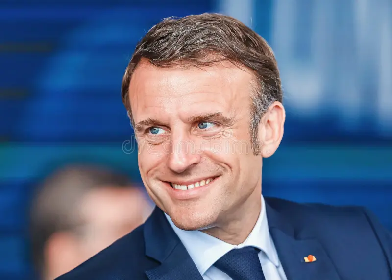
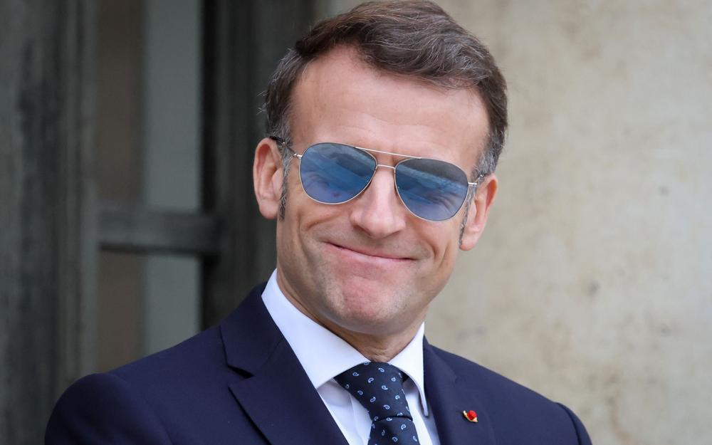

Emmanuel Macron est un homme politique français, né le 21 décembre 1977 à Amiens. Il est président de la République française depuis le 14 mai 2017 et a été réélu en 2022.
Emmanuel Macron a étudié la philosophie à l'université Paris-Nanterre. Il est également diplômé de Sciences Po Paris et de l'École nationale d'administration (ENA), dont il est sorti en 2004.
Élu président de la République le 7 mai 2017, Emmanuel Macron devient, à 39 ans, le plus jeune président de la Ve République. Son premier mandat est notamment marqué par la crise des Gilets jaunes et la pandémie de Covid-19.
Réélu le 24 avril 2022 face à Marine Le Pen, Emmanuel Macron entame son deuxième mandat présidentiel. Celui-ci est notamment marqué par la réforme des retraites de 2023 et la dissolution de l'Assemblée nationale en 2024.